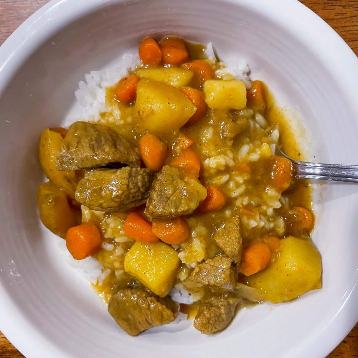

Curry

Description
Tired from a long day of work and don't want to make something too difficult?
Here's an easy and delicious curry recipe for you!
Ingredients
- 1 lb beef stew meat, cut into bite-sized pieces
- 4-5 medium gold potatoes, cubed
- 2-3 carrots, chopped
- 2 Tablespoons avocado oil
- 3-4 blocks of S&B Golden Curry Sauce Mix (Depending on taste)
Steps
- Turn the Instant Pot on saute mode. Once the pot is hot, add in the avocado oil and beef. Stir fry the beef until browned, about 7-10 minutes.
- Next, add the potatoes, carrots, and onions to the pot with the beef. Stir fry for about 5 minutes. We just want a little bit of color on the vegetables. Turn off saute mode.
- Add the water to the pot. Close the lid and set the valve to sealing. Select Manual/Pressure Cook and set the timer to 4 minutes.
- While the Instant Pot is doing its thing, melt the curry blocks inside warm water to reduce it to a paste in a small bowl. Set aside.
- When the timer is up, wait 5 minutes for the valve to naturally release before turning it to the venting position. Quick-release all remaining pressure.
Once all the pressure has been released, open the pot.
- Add in all of the curry mix that was set aside earlier into the Instant Pot with the cooked beef, potatoes, carrots, onion, and water.
Set the Instant Pot to Sauté for 5-minute increments until the curry is thickened to your liking. Stir regularly until it starts to thicken up. Turn off Instant Pot once curry has reached desired thickness.
- Serve and enjoy!